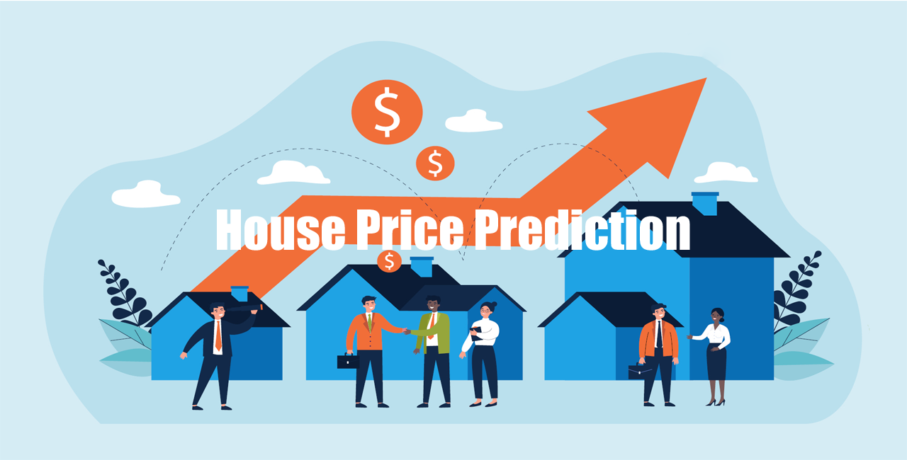

Open to opportunities THREAT LVL: HIGH
IT and Data Analyst transitioning into Cybersecurity, building expertise in Security Operations (SOC), SIEM engineering, threat detection, incident response, and data analytics from Nairobi, Kenya.
About Me
I'm Vincent W. Wekesa, an IT and Data Analyst transitioning into Cybersecurity based in Nairobi, Kenya. I combine rigorous analytical thinking with hands-on technical defense to protect critical data, harden systems, and surface threats before adversaries strike.
Over the past several years, I have built practical expertise across Security Operations, SIEM monitoring, threat detection, incident response fundamentals, access control, and information assurance. My background in Applied Computer Science and Data Analytics empowers me to apply machine learning, statistical validation, and behavioral telemetry to modern SOC workflows.
Work With MePortfolio
Predicting car prices based on multi-dimensional vehicle attributes using regression models, feature selection, and optimization.
Explore Project →
Comprehensive valuation model for real-estate decision making built with advanced regression and feature engineering.
Explore Project →10 machine learning classification models evaluated with Scikit-learn to determine the highest predictive accuracy for diagnosis.
Explore Project →Analyzing emotional indicators across social platforms, including hashtag trends, user sentiment scores, and engagement correlation.
Explore Project →Clustering banking clients with KMeans and Affinity Propagation for targeted risk management and marketing strategies.
Explore Project →Active defense telemetry project with Elastic SIEM, Sysmon, and automated alert triage.
In ProgressCareer
• Analyzed and transformed datasets using Python, SQL, Excel, and statistical validation.
• Designed and optimized database systems, implementing data integrity and security practices.
• Applied cybersecurity principles to monitoring, access control, and threat awareness projects.
• Completed graduate-level research in ML, data analytics, and cyber defense fundamentals.
• Conducted field demographic data collection using digital questionnaires and verification checks.
• Performed data quality validation, ensuring accuracy, completeness, and strict confidentiality.
• Handled sensitive citizen records adhering to official information governance standards.
• Delivered first-line technical support for enterprise hardware, peripherals, and workstation environments.
• Installed and configured Windows and Linux systems, resolving TCP/IP and LAN/WAN connectivity issues.
• Applied systems administration procedures, updates, and foundational security hygiene.
• Active immersion in threat intelligence, network exploitation analysis, and SOC engineering.
• Hands-on masterclasses covering threat hunting, API security, and defensive mitigation pipelines.
What I Do
Real-time security telemetry monitoring, log analysis across endpoints and networks, and correlating alerts with Elastic SIEM, Sysmon, and Suricata.
Identifying indicators of compromise (IOCs), mapping adversary tactics with MITRE ATT&CK, and investigating suspicious anomalies across systems.
Structured incident lifecycle execution: alert triage, host isolation, artifact preservation, and root-cause post-incident reporting.
End-to-end data processing with Python, R, and SQL to build regression, classification, and clustering pipelines for actionable predictive intelligence.
Defending network perimeters, analyzing TCP/IP packets, managing firewall access control, and enforcing identity & access management (IAM).
Evaluating organizational threat posture, identifying vulnerability exposure, ensuring compliance standards, and establishing defensive controls.
Credentials
Get in Touch
I'm always excited to connect, whether you're looking for an aspiring SOC Analyst, collaborating on data & security projects, or discussing modern threat detection.